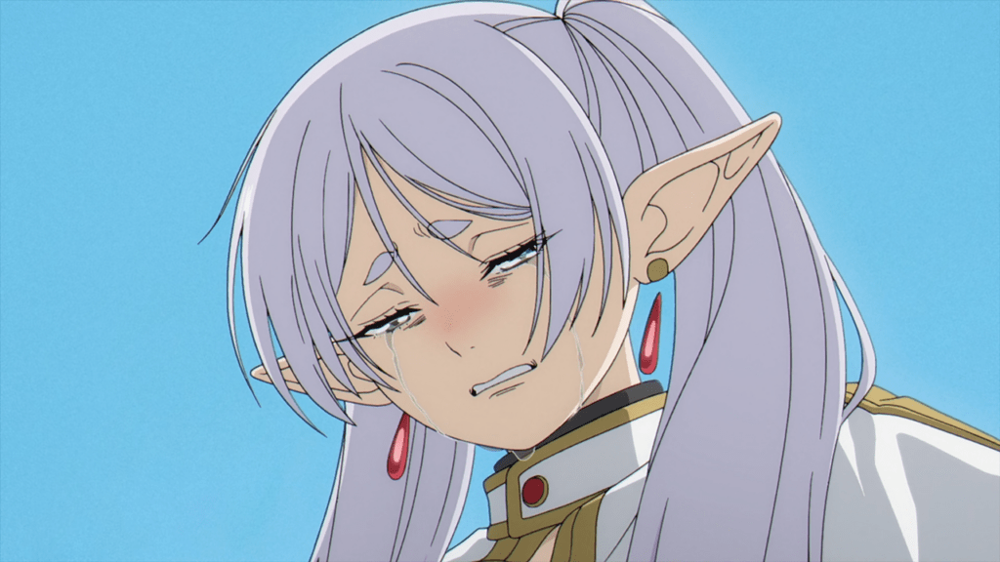
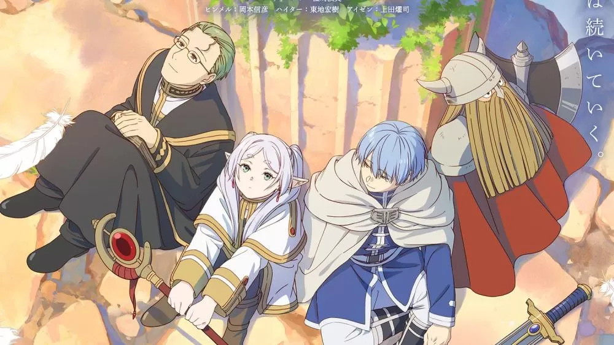

La maga Frieren era parte del grupo de aventureros formado por el gran héroe Himmel, el sacerdote Heiter y el enano guerrero Eisen, quienes derrotaron al Rey Demonio tras un viaje de 10 años y devolvieron la paz al reino. Frieren es una elfa de más de mil años de vida, así que al despedirse de Himmel y sus compañeros promete que regresará para verlos y parte de viaje sola. Al cabo de cincuenta años, Frieren cumple su promesa y acude a visitar a Himmel y al resto. Aunque ella no ha cambiado, Himmel y los demás han envejecido y están en el final de sus vidas. Cuando Himmel muere, Frieren se arrepiente de no haber pasado más tiempo a su lado conociéndolo, así que emprende un viaje para conocer mejor a sus antiguos compañeros, a las personas y descubrir más del mundo.
El cambio definitivo le llega en forma de Fern, una niña a la que toma como aprendiz y posiblemente se convierte en la primera humana a la que Frieren se molesta en conocer de verdad.
'Sousou no Frieren' es una serie increíblemente nostálgica y melancólica. Porque por un lado las escenas del presente se van intercalando con flashbacks de los recuerdos de Frieren con su antiguo grupo (y es casi imposible que no te caigan bien). Y por otro lado, también te deja con esa sensación de tristeza por lo que nunca llegó a ser y todo lo que Frieren no ha llegado a experimentar con sus compañeros humanos.
Ahora bien, el anime no es un dramón ni una tragedia, si no que es acogedor, tranquilo y reconfortante. Sí que tiene sus escenas de acción (e incluso enfrentamientos contra monstruos y demonios con un enorme despliegue de magia), pero al final es un viaje donde lo que importa de verdad son la experiencias que vamos recogiendo por el camino y esos pequeños momentos que hacen que te enamores de sus personajes.
Un gran ejemplo de un personaje amado por todos es Stark, ex-discípulo del enano guerrero Eisen y ahora acompañante de Frieren y Fern en su viaje.
Un perfecto anime de fantasía sin reencarnaciones de por medio
Aunque no vamos cortos de animes de fantasía, 'Sousou no Frieren' es una apuesta perfecta si los típicos anime isekai de fantasía nos tienen un poco agotados y queremos simplemente volver a un mundo de espada y hechicería en la línea de clásicos como 'Black Clover' o 'Demon Slayer'.
Porque el mundo de 'Frieren' es increíblemente rico y cada capítulo te va mostrando diferentes lugares y tradiciones con muchísima historia a través del viaje de su protagonista y sus recuerdos. Y sí, también te deja con muchas ganas de poder ver más de las aventuras del grupo en su época dorada, aunque donde brilla de verdad es en los momentos más calmados en los que los personajes simplemente se dedican a existir juntos y estrechar lazos alrededor de una hoguera o bebiendo juntos en una taberna.
A nivel visual, 'Sousou no Frieren' es una absoluta preciosidad, con diseños de personajes muy sencillos pero muy expresivos. Todo el anime, desde los fondos hasta los personajes y los efectos tienen un acabado muy de cuento de hadas europeo con pintura de acuarela, así que si nos gustó en su momento 'Ranking of Kings', 'Sousou no Frieren' tiene una estética muy similar y una banda sonora preciosa que sabe dónde apretar para hacer ciertas escenas todavía más emocionales.
